学习顺序：A组 → B组 → R组。网页与手写单使用相同题号；可以分次完成。
保留首稿。帮助见网页同号题；可分次完成，理由可口述或指图。
A1 · 从已知角出发
直接在上面原题的四个空格填写，不重复抄写。
现行教材p37练习六5 · 需要帮助回网页A1
A2 · 三个部分合成什么
如图，已知∠1=40°，∠2=60°，那么∠3=____。
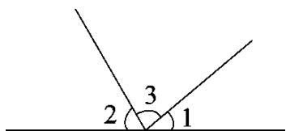
保留你的算式或图上标记。
角的度量达标测试卷 · 十3 · 需要帮助回网页A2
保留首稿。帮助见网页同号题；可分次完成，理由可口述或指图。
现行教材p37练习六5 · 需要帮助回网页A1
如图，已知∠1=40°，∠2=60°，那么∠3=____。

角的度量达标测试卷 · 十3 · 需要帮助回网页A2
保留首稿。帮助见网页同号题；可分次完成，理由可口述或指图。
如下图，已知∠1=60°，求∠2、∠3、∠4的度数。
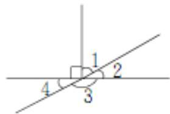
角的度量典型例题 · 考点11练习3 · 需要帮助回网页A3
下面三幅图都是由一副三角尺拼成的，∠1、∠2、∠3各是多少度？
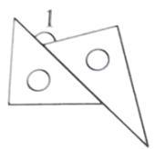
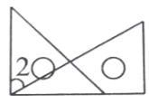
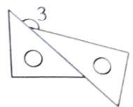
角的度量典型例题 · 考点13三图练习 · 需要帮助回网页A4
保留首稿。帮助见网页同号题；可分次完成，理由可口述或指图。
右图是一道三翼旋转门，由三个门扇分隔成相等的三部分，每两个门扇形成的夹角是（ ）°，它是一个（ ）角。
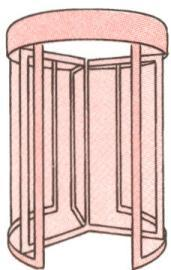
53天天练 · 角的度量素养练习一3 · 需要帮助回网页A5
蓝色、紫色是两个完整直角；金色是两者共同包含的部分。右图可以先说说自己的理由。
现行教材p38练习六9，两图 · 需要帮助回网页B1
保留首稿。帮助见网页同号题；可分次完成，理由可口述或指图。
三个正方形的摆放如下图，已知∠2=30°，∠3=45°，求∠1。
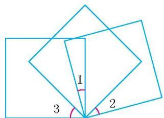
角的度量测试卷 · 第十大题 · 需要帮助回网页B2
把一个平角分成不相等的两个角，较小的那个角是（ ）角。
A.锐 B.钝 C.直
角的度量达标测试卷 · 三5 · 需要帮助回网页B3
判断（对的画“√”，错的画“×”）：
三个角拼成一个平角，这三个角一定都是锐角。（ ）
角的度量过关检测卷 · 三4 · 需要帮助回网页B4
保留首稿。帮助见网页同号题；可分次完成，理由可口述或指图。
如果∠1＋∠2＝∠2＋∠3，∠1＝40°，那么∠3＝（ ）。
同步试题填空5 · 需要帮助回网页B5
下图中两个长方形部分重叠着。∠1＝60°，∠1＋∠2＋∠3＝（ ）°。
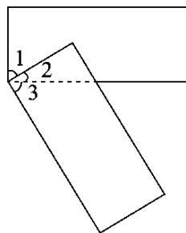
期末检测卷3一8 · 需要帮助回网页B6
保留首稿。帮助见网页同号题；可分次完成，理由可口述或指图。
这是教学示意，不是作答题。沿金色长弧从一条边走到另一条边，走的是外面；它与里面90°合成360°，所以是270°。短弧指里面，长弧指外面。现在回下面的新图，沿题目自己的弧找∠2；不能照抄示意的度数。
如图，已知∠1=45°，那么∠2=____。
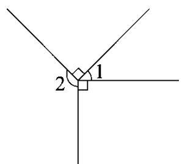
角的度量达标测试卷 · 十2 · 需要帮助回网页R1
时针一圈360°，分成12个一小时，每小时走30°。30°只表示一小时。请你在下面这道题中，自己找经过几个一小时，再把这些30°接起来。
从凌晨3时到上午9时，钟面上的时针按（ ）方向旋转了（ ）度。
原四下期末卷3一5 · 需要帮助回网页R2
保留首稿。帮助见网页同号题；可分次完成，理由可口述或指图。
从12时开始，时针按顺时针旋转180度后是（ ）时，时针从3时到7时，按（ ）时针方向旋转了（ ）度。
期末测试卷4 · 一12 · 需要帮助回网页R3
先找图里“个位”标在哪一档，再依次对应各档。没有靠梁珠的档位也占一个位置，不能跳过去。
这是空档占位的教学例子。下面算盘各档是多少，由你来判断。
如图所示的算盘所表示的多位数是（ ）。
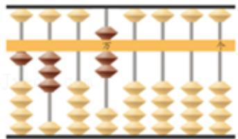
原分层1.10第9题，QI09 · 需要帮助回网页R4
保留首稿。帮助见网页同号题；可分次完成，理由可口述或指图。
先说出各是多少个万，再写一写，读一读。
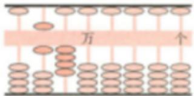
（ ）个万 写作：________________
“多少个万”和读数可以直接说。
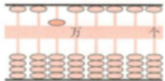
（ ）个万 写作：________________
“多少个万”和读数可以直接说。
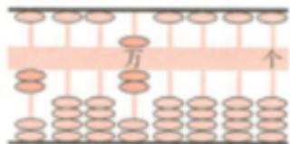
（ ）个万 写作：________________
“多少个万”和读数可以直接说。
原分层1.10第14题 · 需要帮助回网页R5
保留首稿。帮助见网页同号题；可分次完成，理由可口述或指图。
回看已经做过的300700090000，这里只作教学示范，不再要求重做。
先在原串上划去，再沿原来的顺序抄下没划掉的数字。最后一起核对：划去4个0；留下8位；3、7、9的先后没有变；读“三千零七万九千”，只有一个“零”。这是一个符合全部条件的结果。
下面换一道原题。由你选择删哪一位，再检查留下的顺序和读法。
从350400720900中划去（ ）位上的“0”，能使它只读一个0。
3 5 0 4 0 0 7 2 0 9 0 0
原53第10课时2(3) · 需要帮助回网页R6